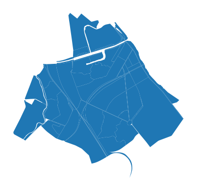

Annealing optimizer
The optimizer is used to optimize city blocks of certain land uses by building services of predefined capacity and area.
Prepare city
The method is time consuming and aimed to work with smaller territories, so we make a smaller model.
[2]:
from blocksnet import City, AnnealingOptimizer
city = City.from_pickle('../model.pickle')
[3]:
blocks = city.get_blocks_gdf(True)
nearest_blocks = blocks.sjoin_nearest(blocks[blocks.index == 1445], distance_col='distance')
nearest_blocks = nearest_blocks[nearest_blocks['distance']<=1000]
nearest_blocks.plot().set_axis_off()

[4]:
city._blocks = {i:city[i] for i in nearest_blocks.index}
Method
[14]:
import random
from blocksnet import LandUse
from blocksnet.method.annealing_optimizer import LU_FSIS, LU_GSIS
ao = AnnealingOptimizer(city_model=city)
blocks_lu = {block.id : random.choice(list(LandUse)) for block in city.blocks}
blocks_fsi = {b_id : LU_FSIS[lu][0] for b_id, lu in blocks_lu.items()}
blocks_gsi = {b_id : LU_GSIS[lu][0] for b_id, lu in blocks_lu.items()}
service_types = {st.name : 1/len(city.service_types) for st in city.service_types}
X, indicators, value, provisions = ao.calculate(blocks_lu, blocks_fsi, blocks_gsi, service_types, rate=0.95, max_iter=10_000)
Value : 0.464: 11%|█ | 1065/10000 [02:46<23:15, 6.40it/s]
[15]:
print('Best objective value:', value)
Best objective value: 0.46475854673870937
[16]:
{st : round(value,2) for st,value in provisions.items()}
[16]:
{'school': 0.68,
'kindergarten': 0.22,
'hospital': 1.0,
'polyclinic': 0.34,
'pitch': 0.0,
'swimming_pool': 0.95,
'stadium': 1.0,
'theatre': 1.0,
'museum': 1.0,
'cinema': 1.0,
'mall': 0.88,
'convenience': 0.18,
'supermarket': 0.5,
'cemetery': 0.0,
'religion': 1.0,
'market': 0.84,
'bowling_alley': 1.0,
'university': 1.0,
'playground': 0.09,
'pharmacy': 0.79,
'fuel': 0.5,
'beach': 0.0,
'train_building': 1.0,
'bank': 0.51,
'lawyer': 0.88,
'cafe': 0.34,
'subway_entrance': 0.45,
'multifunctional_center': 0.03,
'hairdresser': 0.47,
'restaurant': 0.69,
'bar': 0.46,
'park': 0.0,
'government': 1.0,
'recruitment': 1.0,
'hotel': 1.0,
'zoo': 0.0,
'circus': 0.0,
'post': 0.13,
'police': 0.0,
'dog_park': 0.65,
'hostel': 0.34,
'bakery': 0.5,
'parking': 0.02,
'guest_house': 0.0,
'reserve': 0.0,
'sanatorium': 1.0,
'embankment': 0.0,
'machine-building_plant': 1.0,
'brewery': 0.29,
'woodworking_plant': 1.0,
'oil_refinery': 0.0,
'plant_of_building_materials': 0.79,
'wastewater_plant': 0.0,
'water_works': 0.0,
'substation': 0,
'train_station': 0.24,
'bus_station': 0.26,
'bus_stop': 0.07,
'pier': 1.0,
'animal_shelter': 0.07,
'military_kom': 1.0,
'prison': 0.0,
'landfill': 0.0,
'plant_nursery': 0.0,
'greenhouse_complex': 0.0,
'warehouse': 0.5}
[17]:
ao.to_bricks_df(X).head()
[17]:
| block_id | service_type | is_integrated | area | capacity | count | |
|---|---|---|---|---|---|---|
| 4 | 39 | polyclinic | False | 1400.0 | 150 | 1 |
| 28 | 39 | parking | False | 4750.0 | 190 | 1 |
| 58 | 39 | market | False | 6000.0 | 8000 | 1 |
| 82 | 39 | school | False | 4000.0 | 300 | 1 |
| 96 | 39 | museum | True | 1300.0 | 1000 | 1 |
[18]:
ao.to_gdf(X, indicators).head()
[18]:
| population | mall | plant_of_building_materials | polyclinic | playground | post | pier | landfill | kindergarten | animal_shelter | ... | greenhouse_complex | reserve | bar | oil_refinery | bakery | multifunctional_center | embankment | hostel | geometry | land_use | |
|---|---|---|---|---|---|---|---|---|---|---|---|---|---|---|---|---|---|---|---|---|---|
| block_id | |||||||||||||||||||||
| 39 | 1472 | 0.0 | 0.0 | 150.0 | 0.0 | 0.0 | 0.0 | 0.0 | 0.0 | 0.0 | ... | 0.0 | 0.0 | 0.0 | 0.0 | 0.0 | 0.0 | 0.0 | 0.0 | POLYGON ((352493.392 6644174.577, 352480.316 6... | residential |
| 40 | 0 | 0.0 | 0.0 | 0.0 | 0.0 | 0.0 | 0.0 | 0.0 | 0.0 | 0.0 | ... | 0.0 | 0.0 | 0.0 | 0.0 | 0.0 | 0.0 | 0.0 | 0.0 | POLYGON ((352846.893 6643739.658, 352854.917 6... | transport |
| 41 | 0 | 0.0 | 0.0 | 0.0 | 0.0 | 0.0 | 0.0 | 0.0 | 0.0 | 0.0 | ... | 0.0 | 0.0 | 0.0 | 0.0 | 0.0 | 0.0 | 0.0 | 0.0 | POLYGON ((352713.398 6643353.609, 352656.125 6... | business |
| 42 | 0 | 0.0 | 0.0 | 0.0 | 0.0 | 0.0 | 0.0 | 0.0 | 0.0 | 0.0 | ... | 0.0 | 0.0 | 0.0 | 0.0 | 0.0 | 0.0 | 0.0 | 0.0 | POLYGON ((352661.968 6643879.720, 352637.303 6... | transport |
| 43 | 0 | 0.0 | 0.0 | 0.0 | 0.0 | 800.0 | 0.0 | 0.0 | 0.0 | 0.0 | ... | 0.0 | 0.0 | 0.0 | 0.0 | 0.0 | 0.0 | 0.0 | 0.0 | POLYGON ((353921.529 6644728.862, 353829.106 6... | recreation |
5 rows × 69 columns